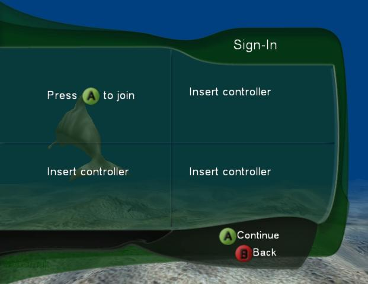
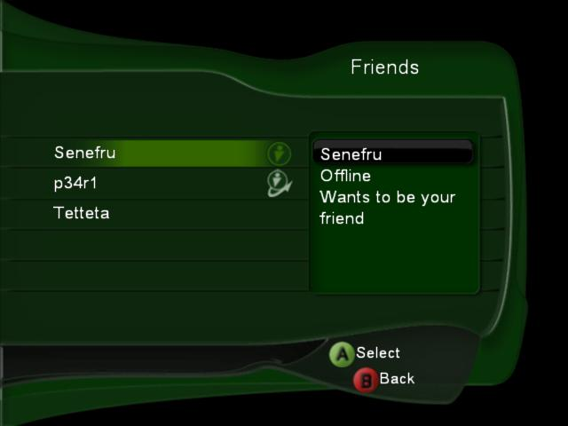

The Xbox Drop-in UI provides an easy-to-use drop-in Xbox Live user interface. UIX is pluggable, customizable, and completely skinnable. Titles can optionally use the UIX as an alternative to direct Xbox Live Library calls, saving developers significant amounts of coding time. Because it is so customizable, UIX enables game creators to rapidly develop an Xbox Live user interface without hindering game innovation or disrupting the game's overall look and feel.
UIX meets all applicable Technical Certification Requirements (TCRs) and complies with the recommended user interface guidelines. As a result, it can ease the title's burden of verifying TCRs and passing game certification.
UIX consists of the following components:

Illustration The Xbox Drop-in UI Logon Feature in action.
UIX does:
UIX does not:
The essentials of UIX are presented in the following topics.
A UIX feature implements a set of related Xbox Live functionality. Features map closely to major Xbox Live areas such as friends lists, logon, and matchmaking. Individual features are enabled with ILiveEngine::EnableFeature and invoked with ILiveEngine::StartFeature. Features are partitioned so that titles can choose to use UIX for some areas while still implementing other Xbox Live functionality directly.
Currently, the primary features of UIX are:

Illustration Logon feature waiting for input.
The logon feature provides a drop-in user interface solution that implements the best practices (including applicable TCRs and recommended UI) for displaying a logon screen and logging players onto the Xbox Live service. The feature performs all logon functions, including selecting user accounts, entering pass codes when needed, and finally logging on to the service. The feature handles logon errors and displays appropriate error messages to the players. In addition, it exits with an exit code indicating whether the logon was successful, an error occurred, or a player exited the logon screen.

Illustration Friends feature showing accepted and pending friends.
The friends feature provides a drop-in solution that implements the best practices (including applicable TCRs and recommended UI) for displaying an in-game friends list. The title starts the friends feature when a player selects "Friends" from either the start menu or main menu of the game. While the friends feature is active, the title does not need to perform any additional friends work or checks (other than updating the engine in the render loop, as explained in the UIX Render Loop topic).
While the friends feature is not being displayed (or has not been started), the title can access methods provided in ILiveFriendsList in order to obtain friends list data. Titles can use this friends data while displaying a list that indicates which players are friends. Titles obtain the ILiveFriendsList interface by calling ILiveEngine::GetFriendsForUser. While the friends feature is active (being displayed), however, the title should not access ILiveFriendsList or any Xbox Live friends functions.
The friends feature requires that the matchmaking service was requested when the logon feature was started.
The players feature provides a drop-in UI solution that implements best practices (including applicable TCRs and recommended UI) for displaying an in-game players List. While the players feature is active, the title does not need to perform any additional players list work or checks other than updating the engine in the render loop.
ILiveEngine is the main interface to UIX. Titles call ILiveEngine methods to perform tasks such as engine initialization, enabling and starting features, and rendering to the display surface. The engine is active and running even when the title is not currently displaying Xbox features.
To set the current online state information for users, titles must call ILiveEngine::NotificationSetState instead of XOnlineNotificationSetState. A user's online state includes information such as whether the user is playing, has voice capability, or is in a joinable session. ILiveEngine::SetProperty modifies the engine's behavior by changing the value of its global properties.
Call UIXCreateLiveEngine to obtain the ILiveEngine interface.
Plug-ins are the interface between the Xbox Drop-in UI engine and the actual tasks of the user interface such as rendering and sound. The engine accepts pluggable interfaces for performing user interface rendering, font rendering, and audio tasks. The default plug-ins implement full functionality, but titles can implement their own plug-in interfaces in order to gain finer control of rendering and sound for the Xbox Live screens.
If a title uses the default plug-ins, it need not be concerned with plug-in details. The exception to this is ITitleFontRenderer, which the title must implement. Other than that, the title can simply create and register the default plug-ins. It does not interact with the plug-ins from that point on.
Note Titles are encouraged, where possible, to move to higher levels of game performance by using the plug-in interface to take control of the entire rendering process. For example, titles that are short on memory can use this technique to optimize away a number of the large screen bitmaps. This is advanced work and not needed for all titles.
The ITitleUIPlugin plug-in is responsible for user interface objects. The UIX engine itself does not perform any user interface rendering; it calls the ITitleUIPlugin interface to perform all rendering functionality. The engine manages the information required to build the user interface, the actions initiated by the interface, and the interface flow. It relies on the UI plug-in for the interface's look and feel. This enables the rendered user interface to be, for example, 2D or 3D. It can also use any font engine, custom icons, custom input, and so on, as desired. The default UI plug-in implementation provides a simple 2D interface.
ITitleFontRenderer, implemented by the title, is responsible for rendering text to the display surface. Titles must implement this plug-in. An example implementation using the XFONT library is shown in Initializing UIX.
The ITitleAudioPlugin plug-in provides basic audio support for actions within the UI. The default audio plug-in uses an XACT sound bank containing sounds associated with each UI action.